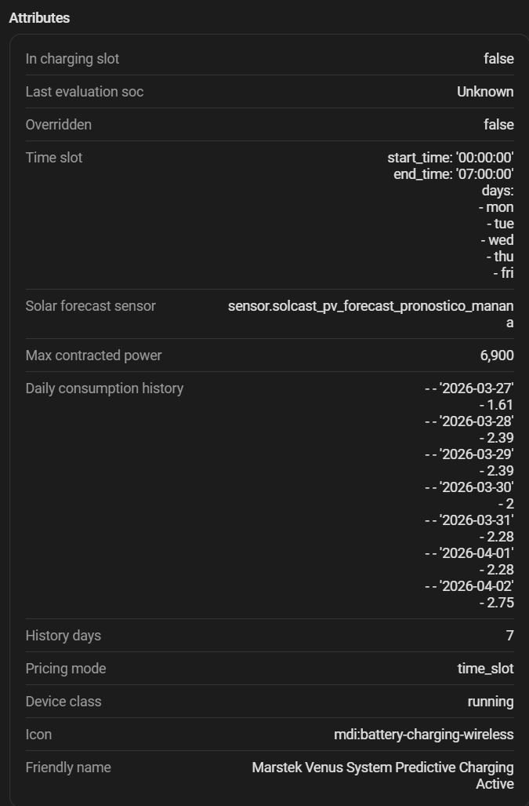

Estimación diaria y horaria del consumo¶
La carga predictiva necesita saber cuánta energía consume tu hogar para decidir si hace falta cargar desde la red. La integración aprende un perfil de consumo de 15 minutos a partir de hasta 28 días locales completos. Hasta que ese perfil alcanza la madurez, la estimación diaria existente de 7 días sigue siendo el fallback seguro.
Modo vacaciones¶
Activa el interruptor Modo vacaciones del dispositivo de sistema de Omnibattery cuando el patrón habitual de la vivienda deje de ser representativo. Los contadores físicos y el gráfico de consumo real siguen registrando, y el control de batería funciona con normalidad. Solo se pausa el aprendizaje: los días afectados se eliminan del histórico diario heredado y solo los intervalos de 15 minutos afectados se excluyen del perfil de 28 días. Los periodos se guardan para que un backfill posterior de Recorder no los reincorpore.
Durante las vacaciones todas las previsiones de consumo usan una carga base constante: la mediana de las tres últimas noches válidas entre 01:00 y 05:00 (cada noche necesita al menos tres horas de cobertura). Antes de la primera noche válida se usa el perfil nocturno aprendido, después la media diaria/24 y por último el valor predeterminado. Al cambiar el interruptor se rompe la continuidad de los integradores de aprendizaje para no atribuir intervalos al modo equivocado.
Precio Dinámico lo usa como curva cronológica, no solo como total diario. Así puede reservar energía de red antes de un agotamiento temprano previsto y mantener flexible por precio el resto del déficit diario. Tanto el perfil maduro como la curva provisional se normalizan a los mismos kWh agregados usados por la decisión predictiva.
Mientras el perfil aprendido no está maduro, ese total diario no se reparte de forma completamente plana: se usa una curva temporal provisional de hogar. La noche (00:00–06:00) recibe el peso mínimo, el desayuno tiene un pequeño repunte, las horas centrales del día reciben más peso y la cena es el pico principal. La curva se normaliza para que el total siga siendo exactamente el consumo diario estimado, incluidos los días de cambio horario, y desaparece en cuanto hay un perfil aprendido con datos reales.
En las reevaluaciones intradía de Precio Dinámico que calculan lo que queda hasta medianoche, la curva también se corrige de forma gradual con el consumo real acumulado del día. La corrección empieza tras las tres primeras horas, alcanza toda su fuerza al mediodía y se limita al 30 % del consumo restante previsto para que un pico puntual no distorsione el resto del día.
Qué mide el consumo estimado¶
El estimado es el consumo total del hogar durante todo el día local, incluidas las franjas de carga predictiva desde la red. Se promedia sobre los últimos 7 días naturales.
Origen del consumo del hogar¶
La potencia del hogar de cada ciclo se deriva de los valores que la integración ya tiene:
Es el mismo valor que muestra el diagrama de flujo de energía y el sensor sensor.marstek_venus_system_home_consumption (Consumo de la Casa, W). La FV acoplada en DC (MPPT) no aparece aquí — ya está neteada en la potencia AC de cada batería en el inversor.
Cuando la batería carga desde la red, su potencia AC es negativa. Ese término cancela la importación de red correspondiente, por lo que la energía destinada a cargar la batería no se confunde con consumo del hogar. Por ejemplo, importar 2,8 kW mientras la batería carga a 2,5 kW da 0,3 kW de demanda de la casa.
Sensor de hogar heredado
Un household_consumption_sensor guardado en una instalación antigua se lee directamente en vez de derivar, pero solo cuando no hay sensor de producción solar configurado — con sensor solar, el valor derivado es exacto y preferido. El campo ya no se ofrece en la configuración.
Dispositivos excluidos / adicionales¶
Si has configurado dispositivos excluidos o adicionales, la potencia del hogar se corrige antes de acumular:
- Excluido (
included_in_consumption = true): el dispositivo ya está en la lectura del hogar/red pero la batería no debe alimentarlo → su potencia se resta. - Adicional (
included_in_consumption = false): el dispositivo no es visible para la lectura del hogar pero la batería sí debe cubrirlo → su potencia se suma.
Acumulación en tiempo real¶
En cada ciclo de control (dirigido por eventos, a la cadencia del sensor de red), la potencia corregida del hogar se integra durante todo el día local. Las franjas de carga predictiva solo programan cuándo puede cargar la batería desde la red; nunca pausan el aprendizaje del consumo de la casa.
Δt es el tiempo real transcurrido desde la muestra anterior, así se adapta a la cadencia variable. El valor diario en curso se expone como household_consumption_full_day_kwh en binary_sensor.marstek_venus_system_predictive_charging_active, y se persiste para sobrevivir reinicios dentro del mismo día.
Captura diaria a las 23:55¶
Cada día a las 23:55 (hora local) la integración guarda una instantánea del acumulador en el historial de 7 días antes de que se resetee a medianoche. El valor solo se almacena si es ≥ 1,5 kWh (para descartar días sin datos significativos).
Historial de 7 días¶
La integración mantiene un historial rodante de las últimas 7 entradas con formato (fecha, kWh), persistido en disco para sobrevivir reinicios de Home Assistant.
Valor de reserva¶
Mientras no haya 7 días reales acumulados (p. ej. recién instalada la integración), las entradas que falten se rellenan con el valor de reserva DEFAULT_BASE_CONSUMPTION_KWH = 5,0 kWh. Actúa solo como marcador temporal y se reemplaza en cuanto hay datos reales disponibles.
Backfill desde el historial del recorder¶
Al arrancar, la integración recupera los días que falten consultando el recorder de Home Assistant para el sensor sensor.marstek_venus_system_home_consumption (que ya resuelve al valor derivado, o al sensor de hogar heredado cuando aplica). Para cada día que falte integra el historial de ese sensor durante todo el día local, aplica los ajustes de dispositivos excluidos/adicionales, y almacena el resultado igual que haría la captura de las 23:55. Así el historial se construye con datos reales incluso tras un reinicio de HA o una instalación nueva. Los historiales creados por versiones antiguas con ventanas se descartan una vez y se reconstruyen desde Recorder para no mezclar totales parciales y completos.
Media móvil de 7 días¶
El consumo estimado que usa la carga predictiva es la media aritmética de todos los valores del historial:
donde n puede ser menor de 7 si aún no hay suficientes días reales (los valores de reserva también cuentan en el promedio hasta ser reemplazados).
Ejemplo completo¶
Lunes: consumo del hogar del día completo = 5,0 kWh
Martes: consumo del hogar del día completo = 5,1 kWh
Miércoles: consumo del hogar del día completo = 5,3 kWh
Jueves: consumo del hogar del día completo = 4,8 kWh
Viernes: consumo del hogar del día completo = 4,9 kWh
Sábado: consumo del hogar del día completo = 6,3 kWh
Domingo: consumo del hogar del día completo = 6,0 kWh
Consumo esperado = (5,0 + 5,1 + 5,3 + 4,8 + 4,9 + 6,3 + 6,0) / 7 = 5,34 kWh
Sensor de diagnóstico¶
| Sensor | Descripción | Reset |
|---|---|---|
sensor.marstek_venus_system_daily_grid_at_min_soc_energy |
Energía importada de la red mientras todas las baterías estaban en SOC mínimo dentro de una franja de descarga — demanda del hogar que la batería no pudo cubrir | Medianoche (hora local) |
Este sensor Grid at Min SOC es informativo: muestra la demanda que la batería no atendió por estar vacía. Ya no se suma al consumo estimado (el consumo del hogar derivado ya captura la carga total de la casa, incluida la parte servida desde la red).
El sensor binary_sensor.marstek_venus_system_predictive_charging_active expone en sus atributos el historial de consumo de los últimos 7 días y el número de entradas reales vs. valores de reserva, útil para verificar el estado del aprendizaje.

Perfil de 28 días por cuarto de hora¶
La integración captura además la demanda corregida del hogar de forma continua, las 24 horas, en 96 intervalos locales de 15 minutos. Cada muestra se integra con regla trapezoidal y se divide al cruzar medianoche, cuartos de hora y cambios de horario de verano. Un hueco de más de cinco minutos rompe la continuidad; un intervalo solo es válido cuando tiene al menos 675 segundos (75 %) de cobertura. Las franjas de carga no se aplican al aprendizaje ni a la previsión de la demanda del hogar: programan la carga de la batería, pero no eliminan la carga de la casa de esas horas.
El perfil combina muestras del mismo día de la semana, del mismo tipo
laborable/fin de semana y globales. Los días recientes pesan 1,0, 0,75, 0,5
y 0,25. Solo se considera maduro con al menos siete días válidos, dos muestras
—del mismo día de la semana o, en su defecto, del mismo tipo laborable/fin de
semana— para el 75 % de los intervalos solicitados, un 80 % de cobertura del rango y una
muestra de menos de siete días. Si no es maduro, se usa automáticamente la media
diaria heredada o la estimación por potencia actual, según el consumidor.
En la curva diaria provisional, el consumo restante se aproxima gradualmente al presupuesto diario todavía no consumido. La corrección alcanza toda su fuerza al mediodía y se limita al 30 % de la curva restante para que un pico puntual no elimine la demanda doméstica que aún cabe esperar durante el día.
Tras arrancar, el backfill del Recorder se ejecuta en segundo plano con una
consulta por cada fuente configurada. Los datos crudos están aislados en
omnibattery.<entry_id>.consumption_profile. Nada de lo que configures borra lo
aprendido: cambiar la fuente o un ajuste de cargas sólo rompe la continuidad del
muestreo y lanza un backfill de los días que falten, y cambiar la zona horaria
de Home Assistant reubica los días guardados según el desfase entre ambas zonas
en vez de descartarlos (los dos días de los extremos se quedan con parte de sus
horas y el backfill los vuelve a pedir). Sólo una zona horaria guardada que ya
no exista obliga a aprender de cero.
El sensor de diagnóstico
sensor.omnibattery_expected_home_consumption_profile expone la previsión,
los 96 intervalos/valores horarios, el origen, la madurez, la cobertura y los
metadatos del fallback. Los diagnósticos de la integración contienen el resumen
acotado por día. La carga predictiva, el Retraso de Carga
Solar y Precio Dinámico solo usan el perfil cuando cumple el contrato de madurez.
Para comprobar cómo se llena el día actual, el sensor de diagnóstico
sensor.omnibattery_consumption_profile_capture muestra los kWh capturados hasta
el momento. Sus atributos hourly_capture_kwh, interval_capture_kwh e
interval_coverage_s permiten localizar el consumo en las 24 horas y en los 96
intervalos de 15 minutos. Este sensor muestra la captura cruda del día actual;
no es la previsión y se reinicia al comenzar el siguiente día local.
Este perfil del hogar es independiente del perfil temporal solar. El consumo aprende demanda absoluta por intervalos de hora local y puede servir como fallback de carga; el perfil solar solo aprende una forma normalizada de luz a partir de potencia FV directa. Ninguno de los dos cambia el presupuesto de kWh de la previsión.